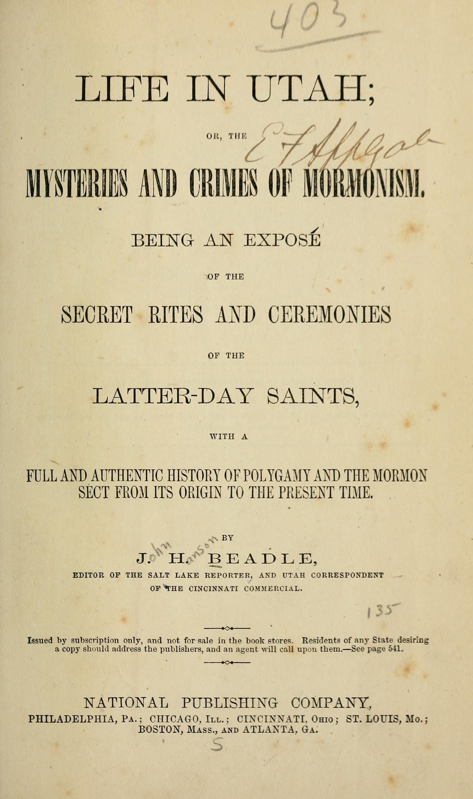

39:37 · 6 OPERE
Proteggendo il proprio inganno, l'individuo finisce per esserne definito.
Il filo del discorso
Il relatore torna alle reazioni suscitate da un proprio estratto dell’audizione del generale Christopher Cavoli e ne ricava una riflessione sull’autoinganno. La tesi è che una persona, difendendo una rappresentazione a cui ha aderito, possa finire per costruire attorno a essa la propria identità e respingere le informazioni dissonanti. Il tema si intreccia alla difficoltà di fare divulgazione in rete: l’aumento delle visualizzazioni non coinciderebbe, secondo il relatore, con un aumento della qualità del confronto. Il richiamo a Freud presenta la lettura come esercizio di revisione del pensiero; I cavalieri di Aristofane e La società dello spettacolo di Guy Debord introducono demagogia, immagini pubbliche e mediazione della realtà. Il relatore applica questa cornice alla guerra in Ucraina, alla comunicazione sulla pandemia e alla formazione universitaria, con giudizi fortemente polemici che la scheda mantiene attribuiti. La seconda parte accosta la difesa di una narrazione ai linguaggi interni delle organizzazioni religiose e alle promesse economiche di alcuni predicatori. Viene consigliato il testo ottocentesco Life in Utah di J. H. Beadle, da distinguere come fonte polemica storica dagli accertamenti contemporanei su fondi e obblighi di trasparenza. La conclusione torna alla disponibilità a cambiare idea: gli esempi non bastano a diagnosticare motivazioni inconsce di singoli interlocutori né a risolvere ogni controversia fattuale.
I libri nel discorso

I cavalieri
Copertina: Knights, Richer Resources Publications, traduzione inglese di Ian Johnston, ISBN paperback 9781935238744. Copertina blu, nera e oro con due mani che tirano una fila di salsicce. Edizione inglese di riferimento, non identificata come esemplare del relatore.
Immagine autentica dell’opera, controllata visivamente; l’edizione di riferimento non è attribuita al filmato.
Titolo e autore espliciti nella raccomandazione di lettura sui problemi della democrazia.
Passaggio 15:25 ↗ · Fonti e libro ↗
La società dello spettacolo
Copertina: La Société du Spectacle, Gallimard, Folio essais 644, 10 luglio 2018, 224 pagine, ISBN 9782072779404. Opera originale del 1967; non i distinti Commentaires sur la société du spectacle del 1988.
Copertina francese autentica del catalogo Gallimard: Guy Debord, titolo rosso, marchio Folio e immagine cartografica circolare. L’edizione italiana effettivamente usata nel contributo non è identificata.
Debord e La società dello spettacolo espliciti, con proposta di un futuro approfondimento.
Passaggio 22:39 ↗ · Fonti e libro ↗
L’arte di ottenere ragione. Esposta in 38 stratagemmi
Identificazione probabile
Copertina: Adelphi, Piccola Biblioteca 274, 1991, 124 pagine, ISBN 9788845908569. Traduzione di Nicola Curcio e Franco Volpi, cura di Franco Volpi. Trattato postumo noto come Eristische Dialektik.
Copertina integrale autentica Adelphi arancione: autore, titolo, sottotitolo, numero 274 e marchio. Sostituita la versione di condivisione sociale con il file specifico della copertina individuato nella pagina dell’editore. Il collegamento all’opera resta probabile; il titolo non è pronunciato.
Schopenhauer e Rechthaberei, volontà di avere ragione: collegamento probabile al testo eristico; titolo non pronunciato.
Passaggio 23:40 ↗ · Fonti e libro ↗Faschismus und eindimensionale Gesellschaft
Identificazione probabile
Fotografia dell’edizione Luchterhand 1971: Neuwied / Berlin, Hermann Luchterhand, 1971, Sammlung Luchterhand 18, 238 pagine. Titolo italiano descrittivo: Fascismo e società unidimensionale; non è attestata qui una edizione italiana.
Fotografia autentica di un esemplare della Librairie du Bassin: copertina beige, autore, titolo tedesco e marchio Sammlung Luchterhand leggibili. L’immagine dell’esemplare mostra segni d’uso e il timbro di un precedente possessore. Non è una copertina ridisegnata, né una immagine dell’opera di Marcuse. Numero di inventario commerciale distinto da un ISBN.
Mansilla, fascismo e società a una dimensione espliciti, con rinvio della trattazione; corrispondenza probabile al titolo tedesco 1971.
Passaggio 24:18 ↗ · Fonti e libro ↗
Vangelo secondo Matteo
Identificazione probabile
Copertina del volume completo: San Paolo, 2014 · Nuova Versione dai Testi Antichi · edizione di riferimento
Vangelo secondo Matteo è un libro della Bibbia. L’immagine mostra il volume completo San Paolo di riferimento, non un’edizione autonoma del singolo libro e non una versione identificata nella citazione.
Mercanti nel Tempio: episodio in Matteo 21,12–13 e paralleli Marco 11, Luca 19, Giovanni 2; collegamento al singolo Vangelo probabile.
Passaggio 32:59 ↗ · Fonti e libro ↗
Life in Utah; or, The Mysteries and Crimes of Mormonism
Frontespizio: Life in Utah, 1870: National Publishing Company, 1870, 540 pagine, con illustrazioni e carta ripiegata. Sul frontespizio sono elencate Philadelphia, Chicago e altre città; data verificata nel catalogo e nel copyright adiacente. Esemplare Rutgers University Libraries, digitalizzato da Internet Archive.
Frontespizio autentico completo, con titolo, sottotitolo, J. H. Beadle, editore e città; copia con annotazioni manoscritte, macchie e tracce d’uso. Il servizio immagini n10 corrisponde al frontespizio (leaf 11 nei metadati di scansione). La pagina adiacente n11, vista per prima, è il copyright e non è stata esportata come immagine del libro. L’immagine raffigura una pagina del documento, non una copertina esterna. Il termine crimes appartiene al titolo polemico del 1870 e non certifica ogni accusa contro una comunità religiosa.
Beadle, Life in Utah; or, The Mysteries and Crimes of Mormonism, National Publishing Company, Chicago e 1870 espliciti.
Passaggio 35:31 ↗ · Fonti e libro ↗